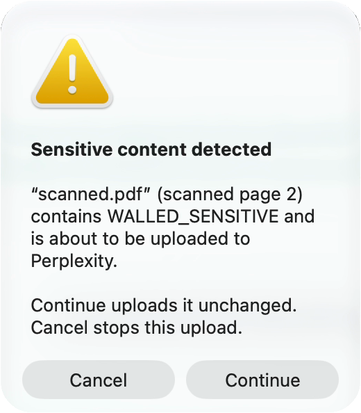

People paste and upload things into AI chat apps that shouldn't leave the company. The task: a lightweight, standalone desktop DLP tool that watches ChatGPT Web and Perplexity Web in a normal browser, with no browser extension. It inspects outgoing prompts and file uploads (text, PDF, images) for WALLED_SENSITIVEbefore they're sent.
Marker found: a native dialog says whether it's in the prompt or a file, shows an excerpt or the file name, and offers Continue and Cancel.
Continue proceeds with the content unchanged.
Cancel blocks it, and the user can still edit and retry.
No marker: no interruption.
AI answers on both sites are also recoloured.
2. Approach
The app routes only the AI sites through a local guard, using the macOS proxy auto-config. It decrypts just those connections with its own locally generated certificate. Each outgoing request is held while its text and file bytes are inspected; if the marker is there, a native dialog decides whether it is forwarded unchanged or answered locally with an error. Nothing is installed in the browser, and every other site goes direct.
Figure 1. Components. Only the AI sites are routed through the app; it inspects and decides before anything is sent.
Alternatives I considered
Option
Why not
Browser extension
Excluded by the brief. My first version was one, so the detection, dialog and tests carried over.
App-launched Chrome over the DevTools protocol
Since Chrome 136 this needs a separate profile, so the user signs in again: not their normal browser. It's also fragile against bot checks.
Accessibility API and key taps
Can't see file bytes reliably, can't recolour answers, and breaks easily.
Embedded browser
Not a normal browser, and Google sign-in blocks embedded web views.
3. Getting the traffic
Routing
install sets a proxy auto-config on every network service, as a data: URL, so it never depends on a server being up:
ChatGPT and Perplexity (including *.oaiusercontent.com and Perplexity's S3 upload bucket) go to 127.0.0.1:8899.
Everything else goes DIRECT.
No fallback for the AI hosts, so if the app is down they fail closed while the rest of the web works.
Previous settings are backed up and restored by uninstall.
Decryption
Local CA. On first run the app creates "Sensitive Upload Guard local CA", and install trusts it in the login keychain.
Narrow. mitmproxy decrypts only the routed hosts (allow_hosts) and opens its own verified TLS connection to the real site.
Key stays local in ~/.upload-guard/ca (mode 0700).
Bot protection: I checked a fresh Chromium against the public pages of both sites, directly and through the guard. Same status and title, composer present, no challenge, no page errors.
4. Holding and deciding
mitmproxy hands every request on a routed host to GuardAddonbefore anything goes upstream. Its hooks are async, so one request can wait for the user while other traffic flows.
Figure 2. A prompt request with the marker. Uploads work the same way with file bytes instead of text.
Kind
Recognised by
Then
Upload
Multipart part with a filename, or PUT/POST bytes to an upload host
Detectors on a worker thread (OCR never stalls the proxy). File name from the part, the set-up request, or the URL. Dialog if flagged
Send
The site's send endpoint, or any POST/PUT whose text contains the marker
Dialog with about 40 characters either side of the marker
Background
A GET whose URL carries the marker (typeahead while typing)
Blocked with no dialog: the marker never leaves, and the user isn't interrupted mid-sentence
Too large
Content-Length over 25 MB
Asked at the headers stage; if allowed, streamed without inspection
Clean
Everything else
Forwarded untouched
Keys: decisions are keyed on the content itself, the prompt text or the sha256 of the file. Parallel requests carrying the same content wait on one dialog.
Memory: Continue is remembered for 10 minutes, so retries aren't asked again. Cancel is remembered for 1.5 s, only to absorb those parallel duplicates.
Cancel's reply carries CORS headers for the page, so the site's own error handling shows the message.
5. Detection
Marker rules
Exact (prompts, text, metadata): NFKC-normalise, drop zero-width characters and soft hyphens, then match WALLED_SENSITIVE case-insensitively.
OCR-tolerant (text from images and scans): also accepts 1 l | ! for I and L, 5 $ for S and VV for W, a stray character between letters, and a space where the underscore was.
OCR
macOS Vision: on-device, with language correction off so the marker isn't "corrected". tesseract is the fallback. Small images are retried enlarged.
Type
Checked by
Text
BOM-aware decode + raw-bytes scan → line N
PDF
pypdf text per page + metadata. Pages with little text or with images are rendered (pdfium) and OCR'd, up to 15 → page N / scanned page N
Image
Metadata (PNG text, EXIF, XMP) + OCR
Office / ZIP
XML with tags stripped; entries recursed; zip-bomb limits
Never passed silently: password-protected, damaged or oversized files, and files no OCR engine can read. Each gets a dialog that says why.
6. The native dialog

Cancel is the default button: Return and Esc both choose it.
Over full-screen Chrome, which lives in its own Space:
the app runs as an accessory app;
the alert window gets CanJoinAllSpaces | FullScreenAuxiliary and status-bar level 25, restored by a modal-loop timer after runModal lowers it;
it's centred on the browser's display;
after the answer it's ordered out and the run loop flushed, so it never lingers.
Checks:scripts/check_fullscreen_dialog.py verifies this without screen recording, using CGWindowList and NSWorkspace. I also checked in-process that the menu-bar app's main-thread dialog answers a held request within a second.
7. Failure modes
Situation
Behaviour
App not running
ChatGPT and Perplexity don't load; every other site works
App crashes
launchd restarts it (KeepAlive after a crash only, so Quit really quits)
File can't be inspected
Dialog explains why and asks
Dialog can't be shown
Treated as Cancel
Upload goes to a host that isn't routed
Seen in the upload set-up reply; logged, naming the host to add to sites.py
Same content in parallel requests
One dialog; the answer applies to all
8. Security and privacy
Local only. Inspection and OCR run on the Mac. Content reaches only the site the user chose, and only once allowed.
Narrow decryption. Only the AI hosts are decrypted. The CA key is generated locally, kept owner-only, and its trust is removed by uninstall.
No content in logs. The audit log holds time, site, file name or prompt length, where, and the decision. The optional request log holds method, host, path and size.
A guardrail, not a hard boundary. A company deployment would push the PAC and CA with a configuration profile and lock them.
9. Testing
Suite
Tests
What it covers
End to end
20
Chromium with only the app's PAC goes through the real guard to a local stand-in for both sites, which records what arrives, so "blocked before it was sent" is checked directly. Covers:
clean prompts and files;
Cancel and Continue for prompts, and for txt, PDF, scanned PDF and PNG files;
typeahead never leaking the marker;
oversized files;
recolouring under a nonce CSP;
other sites going direct, and the AI sites failing closed when the app is down.
Add-on
18
mitmproxy flows: dialog wording, file names from set-up replies and multipart parts, size limits, recolouring
Units
37
Site rules, body parsing, CSP patching, PAC routing evaluated in Node, decision memory
Installer
8
CA, PAC backup and restore, one admin prompt for all services, the login item. System tools are mocked
Detectors + marker
33 + 30
Generated fixtures, including OCR, the tesseract fallback, encrypted and damaged PDFs
Dialog
2
Wording, and the osascript fallback can't be injected
10. Limitations and next steps
macOS only: the installer, the dialog and OCR use macOS APIs.
Firefox needs the CA added to its own store. Apps that pin certificates can't be inspected and would fail if routed.
Cancel shows the site's own error. At the network level the app can't put text back in the site's message box, but the user can edit and resend.
Endpoints and upload hosts change. The general rules still catch the marker, but a new upload host has to be added to the routing list; the app logs which one.
OCR can miss tiny or handwritten text, and files over 25 MB aren't inspected. Both ask the user rather than passing silently.